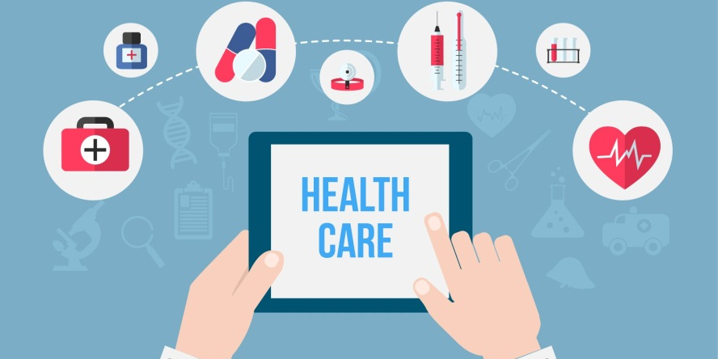

Disruptive Technology and Health Institutions
Disruptive technology is already in development for many problems in healthcare.
Hundreds of thousands have access to their genetic data, revealing what medical
conditions they are susceptible to.
Wearable devices let us measure vital signs
and health parameters anywhere, not just the doctor's office.
The precision of
surgical robots lets doctors perform previously impossible procedures. Exoskeletons
let paralyzed people walk again, and smart algorithms help analyze radiology images.
News every day make us feel as if we live in science fiction.
But when we walk into the GP's office, it's hard to feel the same. Part of the problem is that disruptive innovations are little known among patients,
doctors and even regulators.

Medical education is focused on age old, proven technologies, leaving students unprepared to embrace modern ones - there are only a handful of courses
worldwide that teach digital literacy to medical professionals.
For sure, regulators are simply as much in the dark as the rest of us. Approval processes were designed with 20th century technology in mind, however,
as healthcare is going digital, Moore's Law speeds up medical innovation as well. With massive advances springing up every week, there's simply no
time to stick to established methods of regulation.
The trust in physicians can also be threatened by technology, if healthcare does not embrace it. Even now, patients are using their own
skills and technology to make health decisions - Google is already used by over 90% of patients to research medical information. In the meantime,
though medical outcomes have never been better, trust in physicians is at an all-time low (34% in the US compared to 73% in 1966) - evident in
the popularity of alternative therapies and the anti-vaccine movement. Algorithms, apps and services like IBM Watson, smart health trackers and
cheap genome sequencing will hand even more power to patients who will be able to make medical decisions without consulting doctors. But without
the expertise of physicians, patients can fall prey to misinformation or faulty technology.
Disruptive medical innovations could change healthcare for the better. Technology in the clinic has been shown to help doctors spend more time
with each patient. What's more, with telemedicine, smart algorithms and health trackers making it possible to stream medical data from every home,
patients wouldn't have to wait weeks for a doctor's appointment or have to diagnose themselves, but would get the help they need near instantly.
Studies have shown that medical outcomes increase and costs go down when technology like artificial intelligence is combined with the human touch
of physicians.